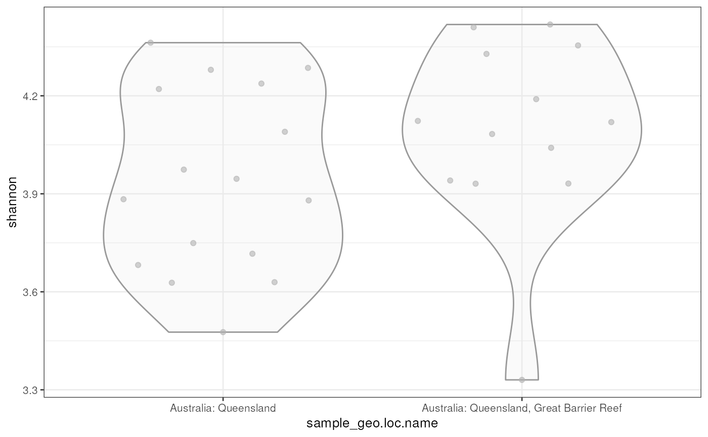
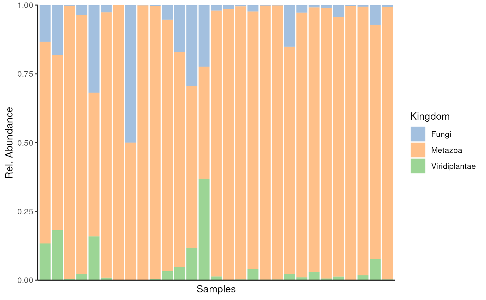
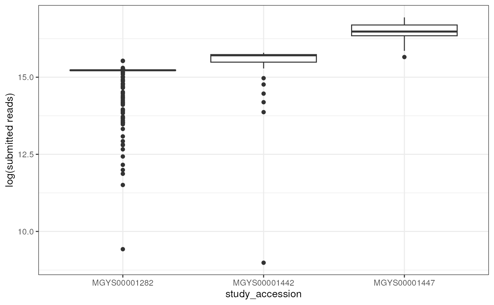
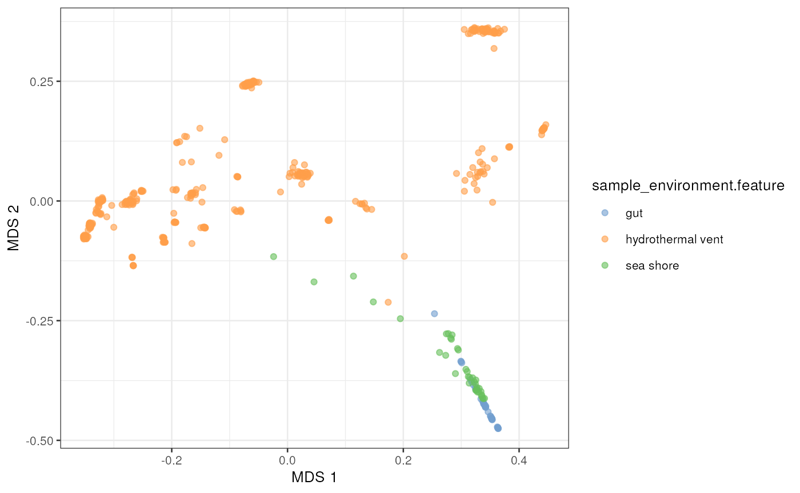

vignettes/MGnifyR_long.Rmd
MGnifyR_long.RmdMGnifyR is a package designed to ease access to the
EBI’s MGnify resource,
allowing searching and retrieval of multiple datasets for downstream
analysis. While MGnify pipelines are undoubtedly useful, as currently
implemented they produce results on a strictly per-sample basis. While
some whole study results are available, comparisons across studies are
difficult. The MGnifyR package is designed to facilitate
cross-study analyses by handling all the per-sample data retrieval and
merging details internally, leaving the user free to perform the
analysis as they see fit.
The latest version of MGnifyR seamlessly integrates with the miaverse framework providing access to tools in microbiome down-stream analytics. This integration enables users to leverage optimized and standardized methods for analyzing the microbiome. Additionally, users can benefit from a comprehensive tutorial book that offers valuable guidance and support.
MGnifyR is currently hosted on GitHub, and can be
installed using via devtools. MGnifyR should
be built using the following snippet.
BiocManager::install(MGnifyR)MGnifyR package
Once installed, MGnifyR is made available in the usual
way.
library(MGnifyR)
#> Loading required package: mia
#> Loading required package: SummarizedExperiment
#> Loading required package: MatrixGenerics
#> Loading required package: matrixStats
#>
#> Attaching package: 'MatrixGenerics'
#> The following objects are masked from 'package:matrixStats':
#>
#> colAlls, colAnyNAs, colAnys, colAvgsPerRowSet, colCollapse,
#> colCounts, colCummaxs, colCummins, colCumprods, colCumsums,
#> colDiffs, colIQRDiffs, colIQRs, colLogSumExps, colMadDiffs,
#> colMads, colMaxs, colMeans2, colMedians, colMins, colOrderStats,
#> colProds, colQuantiles, colRanges, colRanks, colSdDiffs, colSds,
#> colSums2, colTabulates, colVarDiffs, colVars, colWeightedMads,
#> colWeightedMeans, colWeightedMedians, colWeightedSds,
#> colWeightedVars, rowAlls, rowAnyNAs, rowAnys, rowAvgsPerColSet,
#> rowCollapse, rowCounts, rowCummaxs, rowCummins, rowCumprods,
#> rowCumsums, rowDiffs, rowIQRDiffs, rowIQRs, rowLogSumExps,
#> rowMadDiffs, rowMads, rowMaxs, rowMeans2, rowMedians, rowMins,
#> rowOrderStats, rowProds, rowQuantiles, rowRanges, rowRanks,
#> rowSdDiffs, rowSds, rowSums2, rowTabulates, rowVarDiffs, rowVars,
#> rowWeightedMads, rowWeightedMeans, rowWeightedMedians,
#> rowWeightedSds, rowWeightedVars
#> Loading required package: GenomicRanges
#> Loading required package: stats4
#> Loading required package: BiocGenerics
#>
#> Attaching package: 'BiocGenerics'
#> The following objects are masked from 'package:stats':
#>
#> IQR, mad, sd, var, xtabs
#> The following objects are masked from 'package:base':
#>
#> anyDuplicated, aperm, append, as.data.frame, basename, cbind,
#> colnames, dirname, do.call, duplicated, eval, evalq, Filter, Find,
#> get, grep, grepl, intersect, is.unsorted, lapply, Map, mapply,
#> match, mget, order, paste, pmax, pmax.int, pmin, pmin.int,
#> Position, rank, rbind, Reduce, rownames, sapply, setdiff, table,
#> tapply, union, unique, unsplit, which.max, which.min
#> Loading required package: S4Vectors
#>
#> Attaching package: 'S4Vectors'
#> The following object is masked from 'package:utils':
#>
#> findMatches
#> The following objects are masked from 'package:base':
#>
#> expand.grid, I, unname
#> Loading required package: IRanges
#> Loading required package: GenomeInfoDb
#> Loading required package: Biobase
#> Welcome to Bioconductor
#>
#> Vignettes contain introductory material; view with
#> 'browseVignettes()'. To cite Bioconductor, see
#> 'citation("Biobase")', and for packages 'citation("pkgname")'.
#>
#> Attaching package: 'Biobase'
#> The following object is masked from 'package:MatrixGenerics':
#>
#> rowMedians
#> The following objects are masked from 'package:matrixStats':
#>
#> anyMissing, rowMedians
#> Loading required package: SingleCellExperiment
#> Loading required package: TreeSummarizedExperiment
#> Loading required package: Biostrings
#> Loading required package: XVector
#>
#> Attaching package: 'Biostrings'
#> The following object is masked from 'package:base':
#>
#> strsplit
#> Loading required package: MultiAssayExperiment
#> Loading required package: biomformatAll functions in MGnifyR make use of a
MgnifyClient object to keep track of the JSONAPI url, disk
cache location and user access tokens. Thus the first thing to do when
starting any analysis is to instantiate this object. The following
snippet creates this.
mg <- MgnifyClient()
mg
#> An object of class "MgnifyClient"
#> Slot "databaseUrl":
#> [1] "https://www.ebi.ac.uk/metagenomics/api/v1"
#>
#> Slot "authTok":
#> [1] NA
#>
#> Slot "useCache":
#> [1] FALSE
#>
#> Slot "cacheDir":
#> [1] "/__w/MGnifyR/MGnifyR/vignettes/.MGnifyR_cache"
#>
#> Slot "showWarnings":
#> [1] FALSE
#>
#> Slot "clearCache":
#> [1] FALSE
#>
#> Slot "verbose":
#> [1] TRUEIt’s recommended that local caching is enabled with
useCache = TRUE. Queries to the MGnify API can be quite
slow, particularly when retrieving multipage results for many analyses
(such as many Interpro results). Using a local disk cache
can significantly speed up subsequent work, bypassing the need to
re-query the API. Use of the cache should be entirely transparent, as
the caching occurs at the raw data level. The cache can persist across
MGnifyR sessions, and can even be used for multiple
sessions simultaneously - provided that different sets of accessions are
queried at once.
Optionally, a username and password may be specified during client
creation, causing MGnifyR to attempt retrieval of an
authentication token from the API. Doing so gives access to non-public
results, such as those currently under an author imposed embargo
period.
mg <- MgnifyClient(
username = "Webin-username", password = "your-password", useCache = TRUE)MGnifyR gives users access to the complete range of
search functionality implemented in the MGnify JSON API. A single
function doQuery() is used to do perform this searching,
allowing Studies, Samples, Runs and Accession to be interrogated from a
common interface. As with all MGnifyR functions the first argument
client must be a valid MgnifyClient instance.
The only remaining required parameter is
qtype, specifying the type of data to be queried, and may
be one of studies, samples, runs,
analyses or assemblies. Other general
parameter include max.hits.
Unlike most other MGnifyR high level functions, caching
is turned off by default for doQuery(). New data and
analyses are being added to MGnify all the time, so enabling caching by
default may lead to out-of-date search results for long-lived sessions.
However, it’s easy to switch back on, and may be useful in many cases.
Also, given the huge and ever increasing number of datasets available in
MGnify, a limit to the number of results returned may be set using
max.hits. By default this is set to 200, which for most
exploratory queries should be sufficient. It may be increased or
decreased by directly specifying max.hits, and disabled
completely (no limit) by setting max.hits=NULL.
In most cases we will want to be more specific about the search, and
will also use either an accession parameter, or the many
filter options available through the API, and discussed below.
Specifying an accession id, which in the case of
samples, runs and assemblies may
be a vector of ids, returns a data.frame of metadata with one row per
matching accession.
If accession is NULL (the default) then
remaining parameters define the filters applied by the API to the search
result. Details of these parameters are given in
help(doQuery). By way of example though, supposing we are
interested in amplicon Illumina samples from the arctic, we might try
the following query:
northpolar <- doQuery(
mg, "samples", latitude_gte=60.0, experiment_type="amplicon",
biome_name="Soil", instrument_platform = "Illumina", max.hits = 10)
head(northpolar)
#> latitude longitude biosample accession analysis-completed
#> SRS518212 78.7857 -103.5513 SAMN02484608 SRS518212 2016-05-04
#> SRS522877 78.7857 -103.5513 SAMN02484612 SRS522877 2016-05-04
#> SRS522878 78.7849 -103.5551 SAMN02484613 SRS522878 2016-05-04
#> SRS522883 78.7839 -103.5574 SAMN02484618 SRS522883 2016-05-04
#> SRS522884 78.7834 -103.5482 SAMN02484619 SRS522884 2016-05-04
#> SRS522886 78.7854 -103.5433 SAMN02484621 SRS522886 2016-05-04
#> sample-desc environment-biome sample-name
#> SRS518212 Keywords: GSC:MIxS MIMS:5.0 tundra ER-B1
#> SRS522877 Keywords: GSC:MIxS MIMS:5.0 tundra ER-I1
#> SRS522878 Keywords: GSC:MIxS MIMS:5.0 tundra ER-I2
#> SRS522883 Keywords: GSC:MIxS MIMS:5.0 tundra ER-B7
#> SRS522884 Keywords: GSC:MIxS MIMS:5.0 tundra ER-B8
#> SRS522886 Keywords: GSC:MIxS MIMS:5.0 tundra ER-B10
#> sample-alias last-update investigation type
#> SRS518212 ER-B1 2024-01-18T21:26:45 metagenome
#> SRS522877 ER-I1 2024-01-18T21:26:28 metagenome
#> SRS522878 ER-I2 2024-01-18T21:26:12 metagenome
#> SRS522883 ER-B7 2024-01-18T21:25:55 metagenome
#> SRS522884 ER-B8 2024-01-18T21:25:39 metagenome
#> SRS522886 ER-B10 2024-01-18T21:25:06 metagenome
#> project name
#> SRS518212 A community genomics investigation of fungal adaptation to cold
#> SRS522877 A community genomics investigation of fungal adaptation to cold
#> SRS522878 A community genomics investigation of fungal adaptation to cold
#> SRS522883 A community genomics investigation of fungal adaptation to cold
#> SRS522884 A community genomics investigation of fungal adaptation to cold
#> SRS522886 A community genomics investigation of fungal adaptation to cold
#> geographic location (longitude) geographic location (depth)
#> SRS518212 -103.55135 0-0.1m
#> SRS522877 -103.55135 0-0.1m
#> SRS522878 -103.555133 0-0.1m
#> SRS522883 -103.5574 0-0.1m
#> SRS522884 -103.548183 0-0.1m
#> SRS522886 -103.543267 0-0.1m
#> geographic location (country and/or sea,region) collection date
#> SRS518212 Canada: Isachsen, Ellef Ringnes Island 2005-08
#> SRS522877 Canada: Isachsen, Ellef Ringnes Island 2005-08
#> SRS522878 Canada: Isachsen, Ellef Ringnes Island 2005-08
#> SRS522883 Canada: Isachsen, Ellef Ringnes Island 2005-08
#> SRS522884 Canada: Isachsen, Ellef Ringnes Island 2005-08
#> SRS522886 Canada: Isachsen, Ellef Ringnes Island 2005-08
#> environment (biome) environment (feature) environment (material)
#> SRS518212 tundra frost boil soil
#> SRS522877 tundra interboil soil
#> SRS522878 tundra interboil soil
#> SRS522883 tundra frost boil soil
#> SRS522884 tundra frost boil soil
#> SRS522886 tundra frost boil soil
#> environmental package depth elevation
#> SRS518212 MIMS.me;MIGS/MIMS/MIMARKS.soil 0-0.1m 41
#> SRS522877 MIMS.me;MIGS/MIMS/MIMARKS.soil 0-0.1m 41
#> SRS522878 MIMS.me;MIGS/MIMS/MIMARKS.soil 0-0.1m 40
#> SRS522883 MIMS.me;MIGS/MIMS/MIMARKS.soil 0-0.1m 32
#> SRS522884 MIMS.me;MIGS/MIMS/MIMARKS.soil 0-0.1m 30
#> SRS522886 MIMS.me;MIGS/MIMS/MIMARKS.soil 0-0.1m 40
#> miscellaneous parameter geographic location (latitude)
#> SRS518212 Boil 1 78.78565
#> SRS522877 Interboil 1 78.78565
#> SRS522878 Interboil 2 78.784917
#> SRS522883 Boil 7 78.783933
#> SRS522884 Boil 8 78.783433
#> SRS522886 Boil 10 78.78535
#> NCBI sample classification instrument model acc_type
#> SRS518212 410658 Illumina MiSeq samples
#> SRS522877 410658 Illumina MiSeq samples
#> SRS522878 410658 Illumina MiSeq samples
#> SRS522883 410658 Illumina MiSeq samples
#> SRS522884 410658 Illumina MiSeq samples
#> SRS522886 410658 Illumina MiSeq samples
#> biome studies type
#> SRS518212 root:Environmental:Terrestrial:Soil MGYS00000850 samples
#> SRS522877 root:Environmental:Terrestrial:Soil MGYS00000850 samples
#> SRS522878 root:Environmental:Terrestrial:Soil MGYS00000850 samples
#> SRS522883 root:Environmental:Terrestrial:Soil MGYS00000850 samples
#> SRS522884 root:Environmental:Terrestrial:Soil MGYS00000850 samples
#> SRS522886 root:Environmental:Terrestrial:Soil MGYS00000850 samples
#> collection-date
#> SRS518212 <NA>
#> SRS522877 <NA>
#> SRS522878 <NA>
#> SRS522883 <NA>
#> SRS522884 <NA>
#> SRS522886 2005-08-01Specifying an accession parameter will restrict results
to just those matching that particular entry, be it a study, sample or
run. For example, to retrieve information for study “MGYS00002891”:
study_samples <- doQuery(mg, "studies", accession="MGYS00002891")
study_samples
#> accession bioproject samples-count is-private
#> MGYS00002891 MGYS00002891 PRJNA384570 29 FALSE
#> secondary-accession centre-name
#> MGYS00002891 SRP105345 University of Minnesota
#> study-abstract
#> MGYS00002891 Characterization of bacterial communities in marine sediments from Gladstone and Heron Island
#> study-name data-origination last-update
#> MGYS00002891 Queensland Marine Sediment HARVESTED 2019-11-07T16:33:46
#> acc_type biomes type
#> MGYS00002891 studies root:Environmental:Aquatic:Marine:Sediment studiesHaving obtained a particular set of search hits, it’s now time to
retrieve the associated results. General automated analysis is
complicated by the MGnify database design, wherein for example samples
may be shared between multiple studies, or studies analysed multiple
times using different versions of the pipeline. Navigating these
“many-to-one” relationships can be tricky, so MGnifyR
resorts to using analyses accessions as it’s canonical
identifier. Each analysis corresponds to a single run of a particular
pipeline on a single sample in a single study. The downside of this
approach is that queries returning studies,
samples (or anything other than analyses)
accessions need converting to the corresponding
analyses.
MGnifyR therefore provides a helper function to handle
this conversion - searchAnalysis(). Following on from our
previous search, we have a list of study accessions, so to
convert to corresponding analyses we use:
analyses_accessions <- searchAnalysis(
mg, type="studies", accession = study_samples$accession)
analyses_accessions
#> [1] "MGYA00209648" "MGYA00209649" "MGYA00209650" "MGYA00209651" "MGYA00209652"
#> [6] "MGYA00209653" "MGYA00209654" "MGYA00209655" "MGYA00209656" "MGYA00209657"
#> [11] "MGYA00209658" "MGYA00209659" "MGYA00209660" "MGYA00209661" "MGYA00209662"
#> [16] "MGYA00209663" "MGYA00209664" "MGYA00209665" "MGYA00209666" "MGYA00209667"
#> [21] "MGYA00209668" "MGYA00209669" "MGYA00209670" "MGYA00209671" "MGYA00209672"
#> [26] "MGYA00209673" "MGYA00209674" "MGYA00209675" "MGYA00209676"A useful side effect of the above call is that some attribute metadata for each sample has now been retrieved and stored in the local cache. Thus subsequent API calls for these samples (which will occur multiple times in later steps) will be significantly faster.
It’s important to be aware that the results of a
searchAnalysis() command will not necessarily be a
one-to-one match with the input accessions. MGnify analysis
runs are sometimes performed multiple times, perhaps using different
versions of the pipeline. Thus further filtering of the result list may
be required, but is easily performed and is illustrated in the next
section.
At this point we have a long list of analysis instances (with
potential duplicates) corresponding to the samples previously found. We
use the getMetadata function to download and combine all
associated sample, run and study
metadata, which we then filter as required to include only the rows we
want.
analyses_metadata <- getMetadata(mg, analyses_accessions)
head(analyses_metadata)
#> analysis_analysis-status analysis_pipeline-version
#> MGYA00209648 completed 4.1
#> MGYA00209649 completed 4.1
#> MGYA00209650 completed 4.1
#> MGYA00209651 completed 4.1
#> MGYA00209652 completed 4.1
#> MGYA00209653 completed 4.1
#> analysis_experiment-type analysis_accession analysis_is-private
#> MGYA00209648 amplicon MGYA00209648 FALSE
#> MGYA00209649 amplicon MGYA00209649 FALSE
#> MGYA00209650 amplicon MGYA00209650 FALSE
#> MGYA00209651 amplicon MGYA00209651 FALSE
#> MGYA00209652 amplicon MGYA00209652 FALSE
#> MGYA00209653 amplicon MGYA00209653 FALSE
#> analysis_complete-time analysis_instrument-platform
#> MGYA00209648 2018-09-06T00:00:00 ILLUMINA
#> MGYA00209649 2018-09-06T00:00:00 ILLUMINA
#> MGYA00209650 2018-09-06T00:00:00 ILLUMINA
#> MGYA00209651 2018-09-06T00:00:00 ILLUMINA
#> MGYA00209652 2018-09-06T00:00:00 ILLUMINA
#> MGYA00209653 2018-09-06T00:00:00 ILLUMINA
#> analysis_instrument-model analysis_Submitted nucleotide sequences
#> MGYA00209648 Illumina HiSeq 2500 1441694
#> MGYA00209649 Illumina HiSeq 2500 650265
#> MGYA00209650 Illumina HiSeq 2500 1207289
#> MGYA00209651 Illumina HiSeq 2500 469703
#> MGYA00209652 Illumina HiSeq 2500 606584
#> MGYA00209653 Illumina HiSeq 2500 692146
#> analysis_Nucleotide sequences after format-specific filtering
#> MGYA00209648 1441359
#> MGYA00209649 650108
#> MGYA00209650 1206954
#> MGYA00209651 469585
#> MGYA00209652 606429
#> MGYA00209653 691971
#> analysis_Nucleotide sequences after length filtering
#> MGYA00209648 1272787
#> MGYA00209649 578060
#> MGYA00209650 1090737
#> MGYA00209651 419171
#> MGYA00209652 536462
#> MGYA00209653 623965
#> analysis_Nucleotide sequences after undetermined bases filtering
#> MGYA00209648 1272787
#> MGYA00209649 578060
#> MGYA00209650 1090737
#> MGYA00209651 419171
#> MGYA00209652 536462
#> MGYA00209653 623965
#> analysis_Reads with predicted CDS
#> MGYA00209648 22713
#> MGYA00209649 11079
#> MGYA00209650 19717
#> MGYA00209651 7586
#> MGYA00209652 11348
#> MGYA00209653 25746
#> analysis_Reads with predicted RNA
#> MGYA00209648 1243457
#> MGYA00209649 564004
#> MGYA00209650 1065641
#> MGYA00209651 410161
#> MGYA00209652 523120
#> MGYA00209653 595537
#> analysis_Reads with InterProScan match analysis_Predicted CDS
#> MGYA00209648 54 22807
#> MGYA00209649 44 11215
#> MGYA00209650 372 19758
#> MGYA00209651 34 7604
#> MGYA00209652 41 11356
#> MGYA00209653 280 25977
#> analysis_Predicted CDS with InterProScan match
#> MGYA00209648 55
#> MGYA00209649 44
#> MGYA00209650 373
#> MGYA00209651 35
#> MGYA00209652 41
#> MGYA00209653 280
#> analysis_Total InterProScan matches analysis_acc_type
#> MGYA00209648 97 analysis-jobs
#> MGYA00209649 58 analysis-jobs
#> MGYA00209650 589 analysis-jobs
#> MGYA00209651 58 analysis-jobs
#> MGYA00209652 47 analysis-jobs
#> MGYA00209653 485 analysis-jobs
#> study_attributes.accession study_attributes.bioproject
#> MGYA00209648 MGYS00002891 PRJNA384570
#> MGYA00209649 MGYS00002891 PRJNA384570
#> MGYA00209650 MGYS00002891 PRJNA384570
#> MGYA00209651 MGYS00002891 PRJNA384570
#> MGYA00209652 MGYS00002891 PRJNA384570
#> MGYA00209653 MGYS00002891 PRJNA384570
#> study_attributes.samples-count study_attributes.is-private
#> MGYA00209648 29 FALSE
#> MGYA00209649 29 FALSE
#> MGYA00209650 29 FALSE
#> MGYA00209651 29 FALSE
#> MGYA00209652 29 FALSE
#> MGYA00209653 29 FALSE
#> study_attributes.secondary-accession study_attributes.centre-name
#> MGYA00209648 SRP105345 University of Minnesota
#> MGYA00209649 SRP105345 University of Minnesota
#> MGYA00209650 SRP105345 University of Minnesota
#> MGYA00209651 SRP105345 University of Minnesota
#> MGYA00209652 SRP105345 University of Minnesota
#> MGYA00209653 SRP105345 University of Minnesota
#> study_attributes.study-abstract
#> MGYA00209648 Characterization of bacterial communities in marine sediments from Gladstone and Heron Island
#> MGYA00209649 Characterization of bacterial communities in marine sediments from Gladstone and Heron Island
#> MGYA00209650 Characterization of bacterial communities in marine sediments from Gladstone and Heron Island
#> MGYA00209651 Characterization of bacterial communities in marine sediments from Gladstone and Heron Island
#> MGYA00209652 Characterization of bacterial communities in marine sediments from Gladstone and Heron Island
#> MGYA00209653 Characterization of bacterial communities in marine sediments from Gladstone and Heron Island
#> study_attributes.study-name study_attributes.data-origination
#> MGYA00209648 Queensland Marine Sediment HARVESTED
#> MGYA00209649 Queensland Marine Sediment HARVESTED
#> MGYA00209650 Queensland Marine Sediment HARVESTED
#> MGYA00209651 Queensland Marine Sediment HARVESTED
#> MGYA00209652 Queensland Marine Sediment HARVESTED
#> MGYA00209653 Queensland Marine Sediment HARVESTED
#> study_attributes.last-update study_accession study_acc_type
#> MGYA00209648 2019-11-07T16:33:46 MGYS00002891 studies
#> MGYA00209649 2019-11-07T16:33:46 MGYS00002891 studies
#> MGYA00209650 2019-11-07T16:33:46 MGYS00002891 studies
#> MGYA00209651 2019-11-07T16:33:46 MGYS00002891 studies
#> MGYA00209652 2019-11-07T16:33:46 MGYS00002891 studies
#> MGYA00209653 2019-11-07T16:33:46 MGYS00002891 studies
#> sample_latitude sample_biosample sample_longitude sample_accession
#> MGYA00209648 -23.749 SAMN06842047 151.3654 SRS2151215
#> MGYA00209649 -23.7692 SAMN06842069 151.3167 SRS2151190
#> MGYA00209650 -23.6158 SAMN06842067 152.1597 SRS2151193
#> MGYA00209651 -23.7692 SAMN06842071 151.3167 SRS2151189
#> MGYA00209652 -23.4369 SAMN06842064 151.9813 SRS2151195
#> MGYA00209653 -23.6158 SAMN06842065 152.1597 SRS2151196
#> sample_analysis-completed
#> MGYA00209648 2018-09-06
#> MGYA00209649 2018-09-06
#> MGYA00209650 2018-09-06
#> MGYA00209651 2018-09-06
#> MGYA00209652 2018-09-06
#> MGYA00209653 2018-09-06
#> sample_geo-loc-name sample_sample-desc
#> MGYA00209648 Australia: Queensland composite
#> MGYA00209649 Australia: Queensland core
#> MGYA00209650 Australia: Queensland, Great Barrier Reef core
#> MGYA00209651 Australia: Queensland core
#> MGYA00209652 Australia: Queensland, Great Barrier Reef core
#> MGYA00209653 Australia: Queensland, Great Barrier Reef core
#> sample_sample-name sample_sample-alias sample_last-update
#> MGYA00209648 Facing island box 2 Facing island box 2 2018-09-06T01:18:52
#> MGYA00209649 Gladstone Harbour 7A Gladstone Harbour 7A 2018-09-06T01:18:52
#> MGYA00209650 Fitzroy reef 2C Fitzroy reef 2C 2018-09-06T01:18:52
#> MGYA00209651 Gladstone Harbour 7C Gladstone Harbour 7C 2018-09-06T01:18:52
#> MGYA00209652 Heron Island 4D Heron Island 4D 2018-09-06T01:18:52
#> MGYA00209653 Fitzroy reef 2A Fitzroy reef 2A 2018-09-06T01:18:52
#> sample_geographic location (longitude)
#> MGYA00209648 151.36536
#> MGYA00209649 151.31674
#> MGYA00209650 152.15974
#> MGYA00209651 151.31674
#> MGYA00209652 151.98132
#> MGYA00209653 152.15974
#> sample_geographic location (country and/or sea,region)
#> MGYA00209648 Australia: Queensland
#> MGYA00209649 Australia: Queensland
#> MGYA00209650 Australia: Queensland, Great Barrier Reef
#> MGYA00209651 Australia: Queensland
#> MGYA00209652 Australia: Queensland, Great Barrier Reef
#> MGYA00209653 Australia: Queensland, Great Barrier Reef
#> sample_geographic location (latitude) sample_instrument model
#> MGYA00209648 -23.749048 Illumina HiSeq 2500
#> MGYA00209649 -23.769222 Illumina HiSeq 2500
#> MGYA00209650 -23.615824 Illumina HiSeq 2500
#> MGYA00209651 -23.769222 Illumina HiSeq 2500
#> MGYA00209652 -23.436857 Illumina HiSeq 2500
#> MGYA00209653 -23.615824 Illumina HiSeq 2500
#> sample_acc_type run_accession
#> MGYA00209648 samples SRR5483782
#> MGYA00209649 samples SRR5483760
#> MGYA00209650 samples SRR5483762
#> MGYA00209651 samples SRR5483758
#> MGYA00209652 samples SRR5483765
#> MGYA00209653 samples SRR5483764
#> biome_string sample_depth
#> MGYA00209648 root:Environmental:Aquatic:Marine:Sediment <NA>
#> MGYA00209649 root:Environmental:Aquatic:Marine:Sediment 0.0
#> MGYA00209650 root:Environmental:Aquatic:Marine:Sediment 20.0
#> MGYA00209651 root:Environmental:Aquatic:Marine:Sediment 20.0
#> MGYA00209652 root:Environmental:Aquatic:Marine:Sediment 30.0
#> MGYA00209653 root:Environmental:Aquatic:Marine:Sediment 0.0The resulting data.frame has columns with names prefixed with their
source type. For example, “sample_xxx” columns correspond to metadata
gleaned from querying an accession’s sample entry. MGnify
allows quite flexible specification of arbitray metadata at submission
time, in many cases leading to quite sparse data.frame
results if accession queries are sourced from more than one study. For
instance, if only one sample contains an entry for “sample_soil_PH”,
entries for other rows will be filled with NA.
MGnifyR does not automatically clean these missing values -
instead opting to allow the the user to choose the a correct action. The
particular study we’re looking at is from the marine biome, suppose we
were interested in only those samples or analyses for which the sampling
depth was known. The following snippet filters the full
data.frame selecting only entries which contain a valid
sample_depth. It’s worth noting the as.numeric
call to ensure the column is converted to numeric type
before it is checked. All sample data from MGnifyR is initially
retrieved as type character, and it’s up to the user to
make sure ostensibly numeric entries are converted properly.
known_depths <- analyses_metadata[
!is.na(as.numeric(analyses_metadata$sample_depth)), ]
# How many are left?
dim(known_depths)
#> [1] 26 49Having selected the analyses we wish to examine further,
getResult() is used to both download associated OTU tables
and taxonomy, and join all results into a single TreeSummarizedExperiment
(TreeSE) object. TreeSE is becoming a defacto standard for
taxonomic abundance munging in R. TreeSE objects
integrate abundance, taxonomic, phylogenetic, sample and sequence data
into a single object, with powerful facilities for filtering, processing
and plotting the results. Compared to phyloseq
object, TreeSE is more scalable and capable for efficient
data analysis.
miaverse framework is developed around
TreeSE data container. It provides tools for analysis and
visualization. Moreover, it includes a comprehensive tutorial book
called OMA.
When the dataset includes amplicon sequencing data, i.e., the dataset
does not include function predictions, getResult() method
returns the dataset as a TreeSE by default. See other
output types from the function documentation.
tse <- getResult(mg, accession = analyses_accessions, get.func = FALSE)
tse
#> class: TreeSummarizedExperiment
#> dim: 3689 29
#> metadata(0):
#> assays(1): counts
#> rownames(3689): 92640 251937 ... 233398 265506
#> rowData names(8): Kingdom Phylum ... Species taxonomy1
#> colnames(29): MGYA00209651 MGYA00209670 ... MGYA00209657 MGYA00209667
#> colData names(49): analysis_experiment.type analysis_pipeline.version
#> ... biome_string sample_depth
#> reducedDimNames(0):
#> mainExpName: NULL
#> altExpNames(0):
#> rowLinks: NULL
#> rowTree: NULL
#> colLinks: NULL
#> colTree: NULLTreeSE object is uniquely positioned to support SummarizedExperiment-based
microbiome data manipulation and visualization. Moreover, it enables
access to miaverse tools. For example, we can estimate
diversity of samples.
tse <- estimateDiversity(tse, index = "shannon")
library(scater)
#> Loading required package: scuttle
#> Loading required package: ggplot2
plotColData(tse, "shannon", x = "sample_geo.loc.name")
library(miaViz)
#> Loading required package: ggraph
plotAbundance(tse[!is.na( rowData(tse)[["Kingdom"]] ), ], rank = "Kingdom")
If needed, TreeSE can be converted to
phyloseq.
pseq <- makePhyloseqFromTreeSE(tse)
pseq
#> phyloseq-class experiment-level object
#> otu_table() OTU Table: [ 3689 taxa and 29 samples ]
#> sample_data() Sample Data: [ 29 samples by 50 sample variables ]
#> tax_table() Taxonomy Table: [ 3689 taxa by 7 taxonomic ranks ]Although the previous queries have been based on the results from
doQuery(), from now on we will concentrate on combining and
comparing results from specific studies. Since newly performed analyses
are retrieved first in the doQuery() call, it’s likely that
by the time this vignette is read, the query results will be different.
This is principally due to the rapid increase in MGnify submissions,
leading to a potential lack of consistency between even closely spaced
queries. As mentioned previously, it may be best to use
useCache=FALSE from MgnifyCLient object for
doQuery() calls, to ensure queries are actually returning
the latest data.
For the remainder of this vignette however, we’ll be comparing 3 ostensibly different studies. A study of saltmarsh soils from York University, human faecal samples from a survey of healthy Sardinians, and a set of samples from hydrothermal vents in the Mid-Cayman rise in the Carribbean Sea. To simplify things, only the first 20 samples from each study will be used. Furthermore, the intention is only to demonstrate the functionality of the MGnifyR package, rather than produce scientifically rigorous results.
soil <- searchAnalysis(mg, "studies", "MGYS00001447")
human <- searchAnalysis(mg, "studies", "MGYS00001442")
marine <- searchAnalysis(mg, "studies", "MGYS00001282")
# Combine analyses
all_accessions <- c(soil, human, marine)
head(all_accessions)
#> [1] "MGYA00097621" "MGYA00097622" "MGYA00097623" "MGYA00097624" "MGYA00097625"
#> [6] "MGYA00097626"The first step with this new accession list is, as previously, to
retrieve the associated metadata using getMetadata(), and
as seen with the doQuery() results, the returned
data.frame contains a large number of columns. Being
autogenerated and flexible, the column names can be a little difficult
to predict, but examining colnames(full_metadata) should
make things clearer.
full_metadata <- getMetadata(mg, all_accessions)
colnames(full_metadata)
#> [1] "analysis_experiment-type"
#> [2] "analysis_pipeline-version"
#> [3] "analysis_analysis-status"
#> [4] "analysis_accession"
#> [5] "analysis_is-private"
#> [6] "analysis_complete-time"
#> [7] "analysis_instrument-platform"
#> [8] "analysis_instrument-model"
#> [9] "analysis_Submitted nucleotide sequences"
#> [10] "analysis_Nucleotide sequences after format-specific filtering"
#> [11] "analysis_Nucleotide sequences after length filtering"
#> [12] "analysis_Nucleotide sequences after undetermined bases filtering"
#> [13] "analysis_Reads with predicted CDS"
#> [14] "analysis_Reads with predicted RNA"
#> [15] "analysis_Reads with InterProScan match"
#> [16] "analysis_Predicted CDS"
#> [17] "analysis_Predicted CDS with InterProScan match"
#> [18] "analysis_Total InterProScan matches"
#> [19] "analysis_acc_type"
#> [20] "study_attributes.accession"
#> [21] "study_attributes.bioproject"
#> [22] "study_attributes.samples-count"
#> [23] "study_attributes.is-private"
#> [24] "study_attributes.secondary-accession"
#> [25] "study_attributes.centre-name"
#> [26] "study_attributes.study-abstract"
#> [27] "study_attributes.study-name"
#> [28] "study_attributes.data-origination"
#> [29] "study_attributes.last-update"
#> [30] "study_accession"
#> [31] "study_acc_type"
#> [32] "sample_latitude"
#> [33] "sample_longitude"
#> [34] "sample_biosample"
#> [35] "sample_accession"
#> [36] "sample_analysis-completed"
#> [37] "sample_geo-loc-name"
#> [38] "sample_sample-desc"
#> [39] "sample_environment-biome"
#> [40] "sample_environment-feature"
#> [41] "sample_environment-material"
#> [42] "sample_sample-name"
#> [43] "sample_sample-alias"
#> [44] "sample_last-update"
#> [45] "sample_investigation type"
#> [46] "sample_project name"
#> [47] "sample_geographic location (depth)"
#> [48] "sample_collection date"
#> [49] "sample_sequencing method"
#> [50] "sample_geographic location (elevation)"
#> [51] "sample_NCBI sample classification"
#> [52] "sample_instrument model"
#> [53] "sample_ENA checklist"
#> [54] "sample_sediment environmental package"
#> [55] "sample_acc_type"
#> [56] "run_accession"
#> [57] "biome_string"
#> [58] "sample_collection-date"
#> [59] "sample_host-tax-id"
#> [60] "sample_species"
#> [61] "sample_geographic location (longitude)"
#> [62] "sample_geographic location (country and/or sea,region)"
#> [63] "sample_environment (biome)"
#> [64] "sample_environment (feature)"
#> [65] "sample_environment (material)"
#> [66] "sample_environmental package"
#> [67] "sample_host taxid"
#> [68] "sample_geographic location (latitude)"
#> [69] "sample_host scientific name"
#> [70] "sample_human gut environmental package"
head(full_metadata)
#> analysis_experiment-type analysis_pipeline-version
#> MGYA00097631 metagenomic 3.0
#> MGYA00097632 metagenomic 3.0
#> MGYA00097633 metagenomic 3.0
#> MGYA00097634 metagenomic 3.0
#> MGYA00097635 metagenomic 3.0
#> MGYA00097636 metagenomic 3.0
#> analysis_analysis-status analysis_accession analysis_is-private
#> MGYA00097631 completed MGYA00097631 FALSE
#> MGYA00097632 completed MGYA00097632 FALSE
#> MGYA00097633 completed MGYA00097633 FALSE
#> MGYA00097634 completed MGYA00097634 FALSE
#> MGYA00097635 completed MGYA00097635 FALSE
#> MGYA00097636 completed MGYA00097636 FALSE
#> analysis_complete-time analysis_instrument-platform
#> MGYA00097631 2017-02-10T00:00:00 ILLUMINA
#> MGYA00097632 2017-02-10T00:00:00 ILLUMINA
#> MGYA00097633 2017-02-10T00:00:00 ILLUMINA
#> MGYA00097634 2017-02-10T00:00:00 ILLUMINA
#> MGYA00097635 2017-02-10T00:00:00 ILLUMINA
#> MGYA00097636 2017-02-10T00:00:00 ILLUMINA
#> analysis_instrument-model analysis_Submitted nucleotide sequences
#> MGYA00097631 Illumina HiSeq 4000 14263292
#> MGYA00097632 Illumina HiSeq 4000 14017313
#> MGYA00097633 Illumina HiSeq 4000 17493693
#> MGYA00097634 Illumina HiSeq 4000 12803734
#> MGYA00097635 Illumina HiSeq 4000 19918196
#> MGYA00097636 Illumina HiSeq 4000 11768981
#> analysis_Nucleotide sequences after format-specific filtering
#> MGYA00097631 14221062
#> MGYA00097632 14007866
#> MGYA00097633 17476376
#> MGYA00097634 12794042
#> MGYA00097635 19901713
#> MGYA00097636 11759662
#> analysis_Nucleotide sequences after length filtering
#> MGYA00097631 13131530
#> MGYA00097632 13251661
#> MGYA00097633 16306229
#> MGYA00097634 12081026
#> MGYA00097635 18776052
#> MGYA00097636 11124185
#> analysis_Nucleotide sequences after undetermined bases filtering
#> MGYA00097631 13131432
#> MGYA00097632 13251540
#> MGYA00097633 16306111
#> MGYA00097634 12080915
#> MGYA00097635 18775871
#> MGYA00097636 11124089
#> analysis_Reads with predicted CDS
#> MGYA00097631 12706029
#> MGYA00097632 12854908
#> MGYA00097633 15781126
#> MGYA00097634 11692069
#> MGYA00097635 18174796
#> MGYA00097636 10767961
#> analysis_Reads with predicted RNA
#> MGYA00097631 16190
#> MGYA00097632 15055
#> MGYA00097633 20933
#> MGYA00097634 14064
#> MGYA00097635 23868
#> MGYA00097636 15644
#> analysis_Reads with InterProScan match analysis_Predicted CDS
#> MGYA00097631 4564209 12799168
#> MGYA00097632 4905147 12958349
#> MGYA00097633 5734721 15898933
#> MGYA00097634 4303972 11775442
#> MGYA00097635 6944293 18316341
#> MGYA00097636 4064336 10844621
#> analysis_Predicted CDS with InterProScan match
#> MGYA00097631 4567359
#> MGYA00097632 4909395
#> MGYA00097633 5738555
#> MGYA00097634 4306951
#> MGYA00097635 6950012
#> MGYA00097636 4067254
#> analysis_Total InterProScan matches analysis_acc_type
#> MGYA00097631 7258924 analysis-jobs
#> MGYA00097632 7837311 analysis-jobs
#> MGYA00097633 9124572 analysis-jobs
#> MGYA00097634 6849131 analysis-jobs
#> MGYA00097635 11109826 analysis-jobs
#> MGYA00097636 6486426 analysis-jobs
#> study_attributes.accession study_attributes.bioproject
#> MGYA00097631 MGYS00001447 PRJEB19235
#> MGYA00097632 MGYS00001447 PRJEB19235
#> MGYA00097633 MGYS00001447 PRJEB19235
#> MGYA00097634 MGYS00001447 PRJEB19235
#> MGYA00097635 MGYS00001447 PRJEB19235
#> MGYA00097636 MGYS00001447 PRJEB19235
#> study_attributes.samples-count study_attributes.is-private
#> MGYA00097631 38 FALSE
#> MGYA00097632 38 FALSE
#> MGYA00097633 38 FALSE
#> MGYA00097634 38 FALSE
#> MGYA00097635 38 FALSE
#> MGYA00097636 38 FALSE
#> study_attributes.secondary-accession study_attributes.centre-name
#> MGYA00097631 ERP021219 University of York
#> MGYA00097632 ERP021219 University of York
#> MGYA00097633 ERP021219 University of York
#> MGYA00097634 ERP021219 University of York
#> MGYA00097635 ERP021219 University of York
#> MGYA00097636 ERP021219 University of York
#> study_attributes.study-abstract
#> MGYA00097631 Samples were collected from natural and realigned sites, and during Summer and Winter.
#> MGYA00097632 Samples were collected from natural and realigned sites, and during Summer and Winter.
#> MGYA00097633 Samples were collected from natural and realigned sites, and during Summer and Winter.
#> MGYA00097634 Samples were collected from natural and realigned sites, and during Summer and Winter.
#> MGYA00097635 Samples were collected from natural and realigned sites, and during Summer and Winter.
#> MGYA00097636 Samples were collected from natural and realigned sites, and during Summer and Winter.
#> study_attributes.study-name
#> MGYA00097631 Samples from salt marshes in the south of England
#> MGYA00097632 Samples from salt marshes in the south of England
#> MGYA00097633 Samples from salt marshes in the south of England
#> MGYA00097634 Samples from salt marshes in the south of England
#> MGYA00097635 Samples from salt marshes in the south of England
#> MGYA00097636 Samples from salt marshes in the south of England
#> study_attributes.data-origination study_attributes.last-update
#> MGYA00097631 SUBMITTED 2017-02-10T11:32:47
#> MGYA00097632 SUBMITTED 2017-02-10T11:32:47
#> MGYA00097633 SUBMITTED 2017-02-10T11:32:47
#> MGYA00097634 SUBMITTED 2017-02-10T11:32:47
#> MGYA00097635 SUBMITTED 2017-02-10T11:32:47
#> MGYA00097636 SUBMITTED 2017-02-10T11:32:47
#> study_accession study_acc_type sample_latitude sample_longitude
#> MGYA00097631 MGYS00001447 studies 51.7972 0.921
#> MGYA00097632 MGYS00001447 studies 51.7972 0.921
#> MGYA00097633 MGYS00001447 studies 51.7865 0.8609
#> MGYA00097634 MGYS00001447 studies 51.7865 0.8609
#> MGYA00097635 MGYS00001447 studies <NA> <NA>
#> MGYA00097636 MGYS00001447 studies 51.7968 0.9218
#> sample_biosample sample_accession sample_analysis-completed
#> MGYA00097631 SAMEA56090668 ERS1512902 2017-02-10
#> MGYA00097632 SAMEA56092168 ERS1512904 2017-02-10
#> MGYA00097633 SAMEA56099668 ERS1512914 2017-02-10
#> MGYA00097634 SAMEA56095168 ERS1512908 2017-02-10
#> MGYA00097635 <NA> <NA> <NA>
#> MGYA00097636 SAMEA56094418 ERS1512907 2017-02-10
#> sample_geo-loc-name sample_sample-desc
#> MGYA00097631 United Kingdom Natural salt marsh, Mersea Island, Winter
#> MGYA00097632 United Kingdom Natural salt marsh, Mersea Island, Winter
#> MGYA00097633 United Kingdom Natural salt marsh, Abbotts Hall, Winter
#> MGYA00097634 United Kingdom Natural salt marsh, Abbotts Hall, Summer
#> MGYA00097635 <NA> <NA>
#> MGYA00097636 United Kingdom Realigned salt marsh, Mersea Island, Winter
#> sample_environment-biome sample_environment-feature
#> MGYA00097631 marine salt marsh biome sea shore
#> MGYA00097632 marine salt marsh biome sea shore
#> MGYA00097633 marine salt marsh biome sea shore
#> MGYA00097634 marine salt marsh biome sea shore
#> MGYA00097635 <NA> <NA>
#> MGYA00097636 marine salt marsh biome sea shore
#> sample_environment-material
#> MGYA00097631 sediment
#> MGYA00097632 sediment
#> MGYA00097633 sediment
#> MGYA00097634 sediment
#> MGYA00097635 <NA>
#> MGYA00097636 sediment
#> sample_sample-name sample_sample-alias
#> MGYA00097631 Natural salt marsh, Mersea Island, Winter W MINM 1A
#> MGYA00097632 Natural salt marsh, Mersea Island, Winter W MINM 3A
#> MGYA00097633 Natural salt marsh, Abbotts Hall, Winter W AHNM 2A
#> MGYA00097634 Natural salt marsh, Abbotts Hall, Summer S AHNM 1A
#> MGYA00097635 <NA> <NA>
#> MGYA00097636 Realigned salt marsh, Mersea Island, Winter W MIRM 3A
#> sample_last-update sample_investigation type sample_project name
#> MGYA00097631 2017-02-10T11:32:50 metagenome Southern Saltmarshes
#> MGYA00097632 2017-02-10T11:32:50 metagenome Southern Saltmarshes
#> MGYA00097633 2017-02-10T11:32:50 metagenome Southern Saltmarshes
#> MGYA00097634 2017-02-10T11:32:50 metagenome Southern Saltmarshes
#> MGYA00097635 <NA> <NA> <NA>
#> MGYA00097636 2017-02-10T11:32:50 metagenome Southern Saltmarshes
#> sample_geographic location (depth) sample_collection date
#> MGYA00097631 0.05 2015-02-24
#> MGYA00097632 0.05 2015-02-24
#> MGYA00097633 0.05 2015-03-28
#> MGYA00097634 0.05 2014-07-03
#> MGYA00097635 <NA> <NA>
#> MGYA00097636 0.05 2015-02-24
#> sample_sequencing method sample_geographic location (elevation)
#> MGYA00097631 Illumina HiSeq 0.3
#> MGYA00097632 Illumina HiSeq 0.3
#> MGYA00097633 Illumina HiSeq 2
#> MGYA00097634 Illumina HiSeq 2
#> MGYA00097635 <NA> <NA>
#> MGYA00097636 Illumina HiSeq 1
#> sample_NCBI sample classification sample_instrument model
#> MGYA00097631 749907 Illumina HiSeq 4000
#> MGYA00097632 749907 Illumina HiSeq 4000
#> MGYA00097633 749907 Illumina HiSeq 4000
#> MGYA00097634 749907 Illumina HiSeq 4000
#> MGYA00097635 <NA> <NA>
#> MGYA00097636 749907 Illumina HiSeq 4000
#> sample_ENA checklist
#> MGYA00097631 GSC MIxS sediment (ERC000021)
#> MGYA00097632 GSC MIxS sediment (ERC000021)
#> MGYA00097633 GSC MIxS sediment (ERC000021)
#> MGYA00097634 GSC MIxS sediment (ERC000021)
#> MGYA00097635 <NA>
#> MGYA00097636 GSC MIxS sediment (ERC000021)
#> sample_sediment environmental package sample_acc_type
#> MGYA00097631 sediment samples
#> MGYA00097632 sediment samples
#> MGYA00097633 sediment samples
#> MGYA00097634 sediment samples
#> MGYA00097635 <NA> <NA>
#> MGYA00097636 sediment samples
#> run_accession biome_string
#> MGYA00097631 ERR1811630 root:Environmental:Terrestrial:Soil
#> MGYA00097632 ERR1811632 root:Environmental:Terrestrial:Soil
#> MGYA00097633 ERR1811642 root:Environmental:Terrestrial:Soil
#> MGYA00097634 ERR1811636 root:Environmental:Terrestrial:Soil
#> MGYA00097635 ERR1811628 <NA>
#> MGYA00097636 ERR1811635 root:Environmental:Terrestrial:Soil
#> sample_collection-date sample_host-tax-id sample_species
#> MGYA00097631 <NA> <NA> <NA>
#> MGYA00097632 <NA> <NA> <NA>
#> MGYA00097633 <NA> <NA> <NA>
#> MGYA00097634 <NA> <NA> <NA>
#> MGYA00097635 <NA> <NA> <NA>
#> MGYA00097636 <NA> <NA> <NA>
#> sample_geographic location (longitude)
#> MGYA00097631 <NA>
#> MGYA00097632 <NA>
#> MGYA00097633 <NA>
#> MGYA00097634 <NA>
#> MGYA00097635 <NA>
#> MGYA00097636 <NA>
#> sample_geographic location (country and/or sea,region)
#> MGYA00097631 <NA>
#> MGYA00097632 <NA>
#> MGYA00097633 <NA>
#> MGYA00097634 <NA>
#> MGYA00097635 <NA>
#> MGYA00097636 <NA>
#> sample_environment (biome) sample_environment (feature)
#> MGYA00097631 <NA> <NA>
#> MGYA00097632 <NA> <NA>
#> MGYA00097633 <NA> <NA>
#> MGYA00097634 <NA> <NA>
#> MGYA00097635 <NA> <NA>
#> MGYA00097636 <NA> <NA>
#> sample_environment (material) sample_environmental package
#> MGYA00097631 <NA> <NA>
#> MGYA00097632 <NA> <NA>
#> MGYA00097633 <NA> <NA>
#> MGYA00097634 <NA> <NA>
#> MGYA00097635 <NA> <NA>
#> MGYA00097636 <NA> <NA>
#> sample_host taxid sample_geographic location (latitude)
#> MGYA00097631 <NA> <NA>
#> MGYA00097632 <NA> <NA>
#> MGYA00097633 <NA> <NA>
#> MGYA00097634 <NA> <NA>
#> MGYA00097635 <NA> <NA>
#> MGYA00097636 <NA> <NA>
#> sample_host scientific name sample_human gut environmental package
#> MGYA00097631 <NA> <NA>
#> MGYA00097632 <NA> <NA>
#> MGYA00097633 <NA> <NA>
#> MGYA00097634 <NA> <NA>
#> MGYA00097635 <NA> <NA>
#> MGYA00097636 <NA> <NA>From full_metadata we get an idea of the type of data
we’re dealing with, and can extract useul information such as sequencing
platform, source biome, etc. The next code snippet tallies a few of
these columns to give an idea about what’s available. The boxplot also
indicates that while within study read counts are similar, we probably
need to use some sort of normalization procedure when comparing across
samples. We might also want to drop particularly low read coverage
samples from further analysis.
# Load ggplot2
library(ggplot2)
#Distribution of sample source material:
table(full_metadata$`sample_environment-material`)
#>
#> sediment stool water
#> 27 38 412
#What sequencing machine(s) were used?
table(full_metadata$`sample_instrument model`)
#>
#> Illumina HiScanSQ Illumina HiSeq 2000 Illumina HiSeq 2500 Illumina HiSeq 4000
#> 38 352 2 25
#> NextSeq 500
#> 60
# Boxplot of raw read counts:
ggplot(
full_metadata, aes(x=study_accession, y=log(
as.numeric(`analysis_Submitted nucleotide sequences`)))) +
geom_boxplot(aes(group=study_accession)) +
theme_bw() +
ylab("log(submitted reads)")
#> Warning: Removed 1 rows containing non-finite values (`stat_boxplot()`).
Again, we can fetch the data by calling getResult().
bulk.dl=TRUE has the potential to significantly speed up
data retrieval. MGnify makes its functional results available in two
separate ways, either on a per-analysis basis through the web api, or at
the whole study level as large files, tab separated (TSV), and with
columns representing the results for each analysis. When
bulk.dl is FALSE, MGnifyR queries
the web api to get results which (given some functional analyses results
may consist of thousands of entries) may take significant time. Setting
bulk.dl to TRUE causes MGnifyR to
determine the source study associated with a particular
analysis and to instead download and parse its
corresponding results file. Since this result file contains entries for
all analyses associated with the study, by taking advantage of
MGnifyR’s local caching this single download provides
results for many future analyses. In some cases this affords several
orders of magnitude speedup over the api query case.
Unfortunately, column entries in the per-study results files do not
always directly correspond to those from a particular analysis run,
causing the retrieval to fail. The principal cause of this is believed
to be the running of multiple analyses jobs on the same sample. Thus for
reliability, bulk.dl is FALSE by default. As a
general recommendation though, you should try setting it
TRUE the first time getResult() is used on a
set of accessions. If this fails, setting bulk.dl to
FALSE will enable the more robust approach allowing the
analysis to continue. It might take a while though. Hopefully in the
future the sample/analysis correspondence mismatches will be fixed and
the default bulk.dl will be switch to
TRUE.
mae <- getResult(mg, all_accessions, bulk.dl = TRUE)
mae
#> A MultiAssayExperiment object of 4 listed
#> experiments with user-defined names and respective classes.
#> Containing an ExperimentList class object of length 4:
#> [1] microbiota: TreeSummarizedExperiment with 32401 rows and 487 columns
#> [2] go-slim: TreeSummarizedExperiment with 116 rows and 487 columns
#> [3] go-terms: TreeSummarizedExperiment with 2640 rows and 487 columns
#> [4] interpro-identifiers: TreeSummarizedExperiment with 15818 rows and 487 columns
#> Functionality:
#> experiments() - obtain the ExperimentList instance
#> colData() - the primary/phenotype DataFrame
#> sampleMap() - the sample coordination DataFrame
#> `$`, `[`, `[[` - extract colData columns, subset, or experiment
#> *Format() - convert into a long or wide DataFrame
#> assays() - convert ExperimentList to a SimpleList of matrices
#> exportClass() - save data to flat filesFor metagenomic samples, the result is MultiAssayExperiment
(MAE) which links multiple TreeSE objects into
one dataset. These TreeSE objects include taxonomic
profiling data along with functional data in unique objects. Each
objects is linked with each other by their sample names. You can get
access to individual object or experiment by specifying index or
name.
mae[[2]]
#> class: TreeSummarizedExperiment
#> dim: 116 487
#> metadata(0):
#> assays(1): counts
#> rownames(116): GO:0000015 GO:0000150 ... GO:1902494 GO:1990204
#> rowData names(10): description category ... Genus Species
#> colnames(487): MGYA00083332 MGYA00083120 ... MGYA00097653 MGYA00097655
#> colData names(70): analysis_analysis.status analysis_pipeline.version
#> ... sample_host.scientific.name
#> sample_human.gut.environmental.package
#> reducedDimNames(0):
#> mainExpName: NULL
#> altExpNames(0):
#> rowLinks: NULL
#> rowTree: NULL
#> colLinks: NULL
#> colTree: NULLWe can perform principal component analysis to microbial profiling data by utilizing miaverse tools.
# Apply relative transformation
mae[[1]] <- transformAssay(mae[[1]], method = "relabundance")
# Perform PCoA
mae[[1]] <- runMDS(
mae[[1]], assay.type = "relabundance",
FUN = vegan::vegdist, method = "bray")
# Plot
plotReducedDim(mae[[1]], "MDS", colour_by = "sample_environment.feature")
While getResult() can be utilized to retrieve microbial
profiling data, getData() can be used more flexibly to
retrieve any kind of data from the database. It returns data as simple
data.frame or list format.
kegg <- getData(
mg, type = "kegg-modules", accession = "MGYA00642773",
accession.type = "analyses")
head(kegg)
#> document.id type id attributes.accession attributes.completeness
#> 1 1 kegg-modules M00001 M00001 100
#> 2 2 kegg-modules M00002 M00002 100
#> 3 3 kegg-modules M00003 M00003 100
#> 4 4 kegg-modules M00004 M00004 100
#> 5 5 kegg-modules M00005 M00005 100
#> 6 6 kegg-modules M00006 M00006 100
#> attributes.description
#> 1 Pathway modules; Carbohydrate metabolism; Central carbohydrate metabolism
#> 2 Pathway modules; Carbohydrate metabolism; Central carbohydrate metabolism
#> 3 Pathway modules; Carbohydrate metabolism; Central carbohydrate metabolism
#> 4 Pathway modules; Carbohydrate metabolism; Central carbohydrate metabolism
#> 5 Pathway modules; Carbohydrate metabolism; Central carbohydrate metabolism
#> 6 Pathway modules; Carbohydrate metabolism; Central carbohydrate metabolism
#> attributes.name
#> 1 Glycolysis (Embden-Meyerhof pathway), glucose => pyruvate
#> 2 Glycolysis, core module involving three-carbon compounds
#> 3 Gluconeogenesis, oxaloacetate => fructose-6P
#> 4 Pentose phosphate pathway (Pentose phosphate cycle)
#> 5 PRPP biosynthesis, ribose 5P => PRPP
#> 6 Pentose phosphate pathway, oxidative phase, glucose 6P => ribulose 5P
#> links.self
#> 1 https://www.ebi.ac.uk/metagenomics/api/v1/annotations/kegg-modules/M00001?format=json
#> 2 https://www.ebi.ac.uk/metagenomics/api/v1/annotations/kegg-modules/M00002?format=json
#> 3 https://www.ebi.ac.uk/metagenomics/api/v1/annotations/kegg-modules/M00003?format=json
#> 4 https://www.ebi.ac.uk/metagenomics/api/v1/annotations/kegg-modules/M00004?format=json
#> 5 https://www.ebi.ac.uk/metagenomics/api/v1/annotations/kegg-modules/M00005?format=json
#> 6 https://www.ebi.ac.uk/metagenomics/api/v1/annotations/kegg-modules/M00006?format=json
#> ..JSON accession
#> 1 kegg-mod.... MGYA00642773
#> 2 kegg-mod.... MGYA00642773
#> 3 kegg-mod.... MGYA00642773
#> 4 kegg-mod.... MGYA00642773
#> 5 kegg-mod.... MGYA00642773
#> 6 kegg-mod.... MGYA00642773Finally, we can use searchFile() and
getFile() to retrieve other MGnify pipeline outputs such as
merged sequence reads, assembled contigs, and details of the functional
analyses. searchFile() is a simple wrapper function which,
when supplied a list of accessions, finds the urls of the files we’re
after. In most cases we’ll want to filter the returned list down to only
the files of interest, which is easily done on the resulting data.frame
object. In addition to the actual download location (the
download_url column), extra columns include file type,
contents and compression. It’s recommended that the
colnames of the data.frame be examined to get
a grasp on the available metadata. To demonstrate the process, the code
below retrieves a data.frame containing all available downloads for each
accession we’ve been examining previously. It then filters this to
retain only those files corresponding retain the annotated amino acid
sequence files.
# Find list of available downloads
dl_urls <- searchFile(
mg, full_metadata$analysis_accession, type = "analyses")
# Filter table
target_urls <- dl_urls[
dl_urls$attributes.description.label == "Predicted CDS with annotation",]
head(target_urls)
#> type id
#> 3 analyses ERR1811630_MERGED_FASTQ_CDS_annotated.faa.gz
#> 24 analyses ERR1811632_MERGED_FASTQ_CDS_annotated.faa.gz
#> 45 analyses ERR1811642_MERGED_FASTQ_CDS_annotated.faa.gz
#> 68 analyses ERR1811636_MERGED_FASTQ_CDS_annotated.faa.gz
#> 90 analyses ERR1811628_MERGED_FASTQ_CDS_annotated.faa.gz
#> 115 analyses ERR1811635_MERGED_FASTQ_CDS_annotated.faa.gz
#> attributes.alias attributes.file.format.name
#> 3 ERR1811630_MERGED_FASTQ_CDS_annotated.faa.gz FASTA
#> 24 ERR1811632_MERGED_FASTQ_CDS_annotated.faa.gz FASTA
#> 45 ERR1811642_MERGED_FASTQ_CDS_annotated.faa.gz FASTA
#> 68 ERR1811636_MERGED_FASTQ_CDS_annotated.faa.gz FASTA
#> 90 ERR1811628_MERGED_FASTQ_CDS_annotated.faa.gz FASTA
#> 115 ERR1811635_MERGED_FASTQ_CDS_annotated.faa.gz FASTA
#> attributes.file.format.extension attributes.file.format.compression
#> 3 fasta TRUE
#> 24 fasta TRUE
#> 45 fasta TRUE
#> 68 fasta TRUE
#> 90 fasta TRUE
#> 115 fasta TRUE
#> attributes.description.label
#> 3 Predicted CDS with annotation
#> 24 Predicted CDS with annotation
#> 45 Predicted CDS with annotation
#> 68 Predicted CDS with annotation
#> 90 Predicted CDS with annotation
#> 115 Predicted CDS with annotation
#> attributes.description.description
#> 3 Predicted coding sequences with InterPro match (FASTA)
#> 24 Predicted coding sequences with InterPro match (FASTA)
#> 45 Predicted coding sequences with InterPro match (FASTA)
#> 68 Predicted coding sequences with InterPro match (FASTA)
#> 90 Predicted coding sequences with InterPro match (FASTA)
#> 115 Predicted coding sequences with InterPro match (FASTA)
#> attributes.group.type attributes.file.checksum.checksum
#> 3 Sequence data
#> 24 Sequence data
#> 45 Sequence data
#> 68 Sequence data
#> 90 Sequence data
#> 115 Sequence data
#> attributes.file.checksum.checksum.algorithm
#> 3
#> 24
#> 45
#> 68
#> 90
#> 115
#> relationships.pipeline.data.type relationships.pipeline.data.id
#> 3 pipelines 3.0
#> 24 pipelines 3.0
#> 45 pipelines 3.0
#> 68 pipelines 3.0
#> 90 pipelines 3.0
#> 115 pipelines 3.0
#> relationships.pipeline.related
#> 3 https://www.ebi.ac.uk/metagenomics/api/v1/pipelines/3.0?format=json
#> 24 https://www.ebi.ac.uk/metagenomics/api/v1/pipelines/3.0?format=json
#> 45 https://www.ebi.ac.uk/metagenomics/api/v1/pipelines/3.0?format=json
#> 68 https://www.ebi.ac.uk/metagenomics/api/v1/pipelines/3.0?format=json
#> 90 https://www.ebi.ac.uk/metagenomics/api/v1/pipelines/3.0?format=json
#> 115 https://www.ebi.ac.uk/metagenomics/api/v1/pipelines/3.0?format=json
#> download_url
#> 3 https://www.ebi.ac.uk/metagenomics/api/v1/analyses/MGYA00097631/file/ERR1811630_MERGED_FASTQ_CDS_annotated.faa.gz
#> 24 https://www.ebi.ac.uk/metagenomics/api/v1/analyses/MGYA00097632/file/ERR1811632_MERGED_FASTQ_CDS_annotated.faa.gz
#> 45 https://www.ebi.ac.uk/metagenomics/api/v1/analyses/MGYA00097633/file/ERR1811642_MERGED_FASTQ_CDS_annotated.faa.gz
#> 68 https://www.ebi.ac.uk/metagenomics/api/v1/analyses/MGYA00097634/file/ERR1811636_MERGED_FASTQ_CDS_annotated.faa.gz
#> 90 https://www.ebi.ac.uk/metagenomics/api/v1/analyses/MGYA00097635/file/ERR1811628_MERGED_FASTQ_CDS_annotated.faa.gz
#> 115 https://www.ebi.ac.uk/metagenomics/api/v1/analyses/MGYA00097636/file/ERR1811635_MERGED_FASTQ_CDS_annotated.faa.gz
#> accession
#> 3 MGYA00097631
#> 24 MGYA00097632
#> 45 MGYA00097633
#> 68 MGYA00097634
#> 90 MGYA00097635
#> 115 MGYA00097636To list the types of available files, and guide the filtering, something like the following might be useful.
table(dl_urls$attributes.description.label)
#>
#> Complete GO annotation GO slim annotation
#> 478 478
#> InterPro matches OTUs, counts and taxonomic assignments
#> 483 1434
#> Phylogenetic tree Predicted CDS with annotation
#> 478 477
#> Predicted CDS without annotation Predicted ORF without annotation
#> 480 488
#> Predicted tRNAs Processed nucleotide reads
#> 478 508
#> Processed reads with annotation Processed reads with pCDS
#> 477 508
#> Processed reads without annotation Reads encoding 16S rRNA
#> 488 478
#> Reads encoding 23S rRNA Reads encoding 5S rRNA
#> 478 478
#> Taxa abundance distribution
#> 475Unlike other MGnifyR functions,
searchFile() is not limited to analyses, and
by specifying accession_type other results types may be
found. For instance, while general genome functionality is
not yet integrated into MGnifyR, we can retrieve associated
files for a particular genome accession with the
following:
genome_urls <- searchFile(mg, "MGYG000433953", type = "genomes")
genome_urls[c("id","attributes.file.format.name","download_url")]
#> id attributes.file.format.name
#> 1 core_genes.txt TAB
#> 2 gene_presence_absence.csv CSV
#> 3 gene_presence_absence.Rtab TSV
#> 4 mashtree.nwk Newick format
#> 5 MGYG000433953.faa FASTA
#> 6 MGYG000433953.fna FASTA
#> 7 MGYG000433953.fna.fai FAI
#> 8 MGYG000433953.gff GFF
#> 9 MGYG000433953_amrfinderplus.tsv TSV
#> 10 MGYG000433953_crisprcasfinder.gff GFF
#> 11 MGYG000433953_crisprcasfinder.tsv TSV
#> 12 MGYG000433953_eggNOG.tsv TSV
#> 13 MGYG000433953_InterProScan.tsv TSV
#> 14 MGYG000433953_mobilome.gff GFF
#> 15 MGYG000433953_rRNAs.fasta FASTA
#> 16 MGYG000433953_sanntis.gff GFF
#> 17 pan-genome.fna FASTA
#> download_url
#> 1 https://www.ebi.ac.uk/metagenomics/api/v1/genomes/MGYG000433953/downloads/core_genes.txt
#> 2 https://www.ebi.ac.uk/metagenomics/api/v1/genomes/MGYG000433953/downloads/gene_presence_absence.csv
#> 3 https://www.ebi.ac.uk/metagenomics/api/v1/genomes/MGYG000433953/downloads/gene_presence_absence.Rtab
#> 4 https://www.ebi.ac.uk/metagenomics/api/v1/genomes/MGYG000433953/downloads/mashtree.nwk
#> 5 https://www.ebi.ac.uk/metagenomics/api/v1/genomes/MGYG000433953/downloads/MGYG000433953.faa
#> 6 https://www.ebi.ac.uk/metagenomics/api/v1/genomes/MGYG000433953/downloads/MGYG000433953.fna
#> 7 https://www.ebi.ac.uk/metagenomics/api/v1/genomes/MGYG000433953/downloads/MGYG000433953.fna.fai
#> 8 https://www.ebi.ac.uk/metagenomics/api/v1/genomes/MGYG000433953/downloads/MGYG000433953.gff
#> 9 https://www.ebi.ac.uk/metagenomics/api/v1/genomes/MGYG000433953/downloads/MGYG000433953_amrfinderplus.tsv
#> 10 https://www.ebi.ac.uk/metagenomics/api/v1/genomes/MGYG000433953/downloads/MGYG000433953_crisprcasfinder.gff
#> 11 https://www.ebi.ac.uk/metagenomics/api/v1/genomes/MGYG000433953/downloads/MGYG000433953_crisprcasfinder.tsv
#> 12 https://www.ebi.ac.uk/metagenomics/api/v1/genomes/MGYG000433953/downloads/MGYG000433953_eggNOG.tsv
#> 13 https://www.ebi.ac.uk/metagenomics/api/v1/genomes/MGYG000433953/downloads/MGYG000433953_InterProScan.tsv
#> 14 https://www.ebi.ac.uk/metagenomics/api/v1/genomes/MGYG000433953/downloads/MGYG000433953_mobilome.gff
#> 15 https://www.ebi.ac.uk/metagenomics/api/v1/genomes/MGYG000433953/downloads/MGYG000433953_rRNAs.fasta
#> 16 https://www.ebi.ac.uk/metagenomics/api/v1/genomes/MGYG000433953/downloads/MGYG000433953_sanntis.gff
#> 17 https://www.ebi.ac.uk/metagenomics/api/v1/genomes/MGYG000433953/downloads/pan-genome.fnaHaving found the a set of target urls, the final step is to use
getFile() to actually retrieve the file. Unlike other
functions, this only works with a single url location at once, so each
entry in target_urls from above must be downloaded
individually - easily done by either looping or applying
over the list.
If the files are intended to be used with external programs, it might
be easiest to provide a file parameter to the function
call, which specifies a local filename for writing the file. By default
MGnifyR will use the local cache, which can make getting to
the file afterwards more awkward. Regardless, the default behaviour of
getFile() is to retrieve the file specified in the
parameter url, save it to disk, and return the filepath it
was saved to.
# Just select a single file from the target_urls list for demonstration.
# Default behavior - use local cache.
cached_location1 = getFile(mg, target_urls$download_url[[1]])
# Specifying a file
cached_location2 <- getFile(
mg, target_urls$download_url[[1]])
cached_location <- c(cached_location1, cached_location2)
# Where are the files?
cached_location
#> [1] "/tmp/RtmpeKYwQ1/file4c1937cbdfd5" "/tmp/RtmpeKYwQ1/file4c19a3b3548"A second download option is available, which allows built-in parsing
of the file. If we know ahead of time what processing will be performed,
it may be possible to integrate it into a function, pass this function
to getFile() as the read.func argument. The
function in question should take a single argument (the complete path
name of the locally downloaded file) and the result of the call will be
returned in place of the usual output file name.
Alternatively the files could first be downloaded in the standard
way, and then processed using this same function in a loop. Therefore in
many cases the read.func parameter is redundant. However,
many of the outputs from MGnify can be quite large, meaning local
storage of many files may become an issue. By providing a
read_func parameter (and necessarily setting from
MgnifyClient object: useCache=FALSE) analysis
of a large number of datasets may be possible with minimal storage
requirements.
To illustrate, suppose we were interested in retrieving all detected
sequences matching a particular PFAM motif in a set of analyses. The
simple function below uses the Biostrings package to read
an amino acid fasta file, searches for a matching PFAM tag in the
sequence name, and then tallies up the unique sequences into a single
data.frame row. In this case the PFAM motif identifies sequences coding
for the amoC gene, found in both ammonia and methane oxidizing
organisms, but any other filtering method could be used.
library(Biostrings)
# Simple function to a count of unique sequences matching PFAM amoC/mmoC motif
getAmoCseqs <- function(fname){
sequences <- readAAStringSet(fname)
tgtvec <- grepl("PF04896", names(sequences))
as.data.frame(as.list(table(as.character(sequences[tgtvec]))))
}Having defined the function, it just remains to include it in the
call to getFile().
# Just download a single accession for demonstration, specifying a read_function
amoC_seq_counts <- getFile(
mg, target_urls$download_url[[1]], read_func = getAmoCseqs)
amoC_seq_counts
#> [1] "/tmp/RtmpeKYwQ1/file4c1941f3c62"
sessionInfo()
#> R Under development (unstable) (2024-02-07 r85873)
#> Platform: x86_64-pc-linux-gnu
#> Running under: Ubuntu 22.04.3 LTS
#>
#> Matrix products: default
#> BLAS: /usr/lib/x86_64-linux-gnu/openblas-pthread/libblas.so.3
#> LAPACK: /usr/lib/x86_64-linux-gnu/openblas-pthread/libopenblasp-r0.3.20.so; LAPACK version 3.10.0
#>
#> locale:
#> [1] LC_CTYPE=en_US.UTF-8 LC_NUMERIC=C
#> [3] LC_TIME=en_US.UTF-8 LC_COLLATE=en_US.UTF-8
#> [5] LC_MONETARY=en_US.UTF-8 LC_MESSAGES=en_US.UTF-8
#> [7] LC_PAPER=en_US.UTF-8 LC_NAME=C
#> [9] LC_ADDRESS=C LC_TELEPHONE=C
#> [11] LC_MEASUREMENT=en_US.UTF-8 LC_IDENTIFICATION=C
#>
#> time zone: UTC
#> tzcode source: system (glibc)
#>
#> attached base packages:
#> [1] stats4 stats graphics grDevices utils datasets methods
#> [8] base
#>
#> other attached packages:
#> [1] miaViz_1.11.0 ggraph_2.1.0
#> [3] scater_1.31.2 ggplot2_3.4.4
#> [5] scuttle_1.13.0 MGnifyR_0.99.18
#> [7] biomformat_1.31.0 mia_1.11.1
#> [9] MultiAssayExperiment_1.29.1 TreeSummarizedExperiment_2.11.0
#> [11] Biostrings_2.71.2 XVector_0.43.1
#> [13] SingleCellExperiment_1.25.0 SummarizedExperiment_1.33.3
#> [15] Biobase_2.63.0 GenomicRanges_1.55.2
#> [17] GenomeInfoDb_1.39.6 IRanges_2.37.1
#> [19] S4Vectors_0.41.3 BiocGenerics_0.49.1
#> [21] MatrixGenerics_1.15.0 matrixStats_1.2.0
#> [23] knitr_1.45 BiocStyle_2.31.0
#>
#> loaded via a namespace (and not attached):
#> [1] jsonlite_1.8.8 tidyjson_0.3.2
#> [3] magrittr_2.0.3 ggbeeswarm_0.7.2
#> [5] farver_2.1.1 rmarkdown_2.25
#> [7] fs_1.6.3 zlibbioc_1.49.0
#> [9] ragg_1.2.7 vctrs_0.6.5
#> [11] multtest_2.59.0 memoise_2.0.1
#> [13] DelayedMatrixStats_1.25.1 RCurl_1.98-1.14
#> [15] ggtree_3.11.0 BiocBaseUtils_1.5.0
#> [17] htmltools_0.5.7 S4Arrays_1.3.3
#> [19] BiocNeighbors_1.21.2 Rhdf5lib_1.25.1
#> [21] gridGraphics_0.5-1 SparseArray_1.3.4
#> [23] rhdf5_2.47.4 sass_0.4.8
#> [25] bslib_0.6.1 desc_1.4.3
#> [27] plyr_1.8.9 DECIPHER_2.31.2
#> [29] cachem_1.0.8 igraph_2.0.1.1
#> [31] iterators_1.0.14 lifecycle_1.0.4
#> [33] pkgconfig_2.0.3 rsvd_1.0.5
#> [35] Matrix_1.6-5 R6_2.5.1
#> [37] fastmap_1.1.1 GenomeInfoDbData_1.2.11
#> [39] aplot_0.2.2 digest_0.6.34
#> [41] ggnewscale_0.4.10 colorspace_2.1-0
#> [43] patchwork_1.2.0 irlba_2.3.5.1
#> [45] textshaping_0.3.7 vegan_2.6-4
#> [47] beachmat_2.19.1 labeling_0.4.3
#> [49] fansi_1.0.6 urltools_1.7.3
#> [51] polyclip_1.10-6 httr_1.4.7
#> [53] abind_1.4-5 mgcv_1.9-1
#> [55] compiler_4.4.0 withr_3.0.0
#> [57] BiocParallel_1.37.0 viridis_0.6.5
#> [59] DBI_1.2.1 highr_0.10
#> [61] ggforce_0.4.1 MASS_7.3-60.2
#> [63] DelayedArray_0.29.1 bluster_1.13.0
#> [65] permute_0.9-7 tools_4.4.0
#> [67] vipor_0.4.7 beeswarm_0.4.0
#> [69] ape_5.7-1 glue_1.7.0
#> [71] nlme_3.1-164 rhdf5filters_1.15.2
#> [73] grid_4.4.0 ade4_1.7-22
#> [75] cluster_2.1.6 reshape2_1.4.4
#> [77] generics_0.1.3 gtable_0.3.4
#> [79] tidyr_1.3.1 data.table_1.15.0
#> [81] tidygraph_1.3.1 BiocSingular_1.19.0
#> [83] ScaledMatrix_1.11.0 utf8_1.2.4
#> [85] foreach_1.5.2 ggrepel_0.9.5
#> [87] pillar_1.9.0 stringr_1.5.1
#> [89] yulab.utils_0.1.4 splines_4.4.0
#> [91] tweenr_2.0.2 dplyr_1.1.4
#> [93] treeio_1.27.0 lattice_0.22-5
#> [95] survival_3.5-7 tidyselect_1.2.0
#> [97] DirichletMultinomial_1.45.0 gridExtra_2.3
#> [99] bookdown_0.37 phyloseq_1.47.0
#> [101] xfun_0.42 graphlayouts_1.1.0
#> [103] stringi_1.8.3 ggfun_0.1.4
#> [105] lazyeval_0.2.2 yaml_2.3.8
#> [107] evaluate_0.23 codetools_0.2-19
#> [109] tibble_3.2.1 BiocManager_1.30.22
#> [111] ggplotify_0.1.2 cli_3.6.2
#> [113] systemfonts_1.0.5 munsell_0.5.0
#> [115] jquerylib_0.1.4 Rcpp_1.0.12
#> [117] triebeard_0.4.1 parallel_4.4.0
#> [119] pkgdown_2.0.7 assertthat_0.2.1
#> [121] sparseMatrixStats_1.15.0 bitops_1.0-7
#> [123] decontam_1.23.0 viridisLite_0.4.2
#> [125] tidytree_0.4.6 scales_1.3.0
#> [127] purrr_1.0.2 crayon_1.5.2
#> [129] rlang_1.1.3